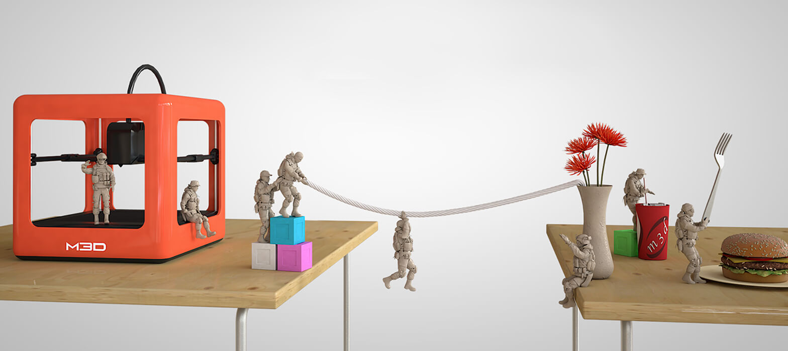

<?xml version="1.0" encoding="UTF-8"?><rss version="2.0"
	xmlns:content="http://purl.org/rss/1.0/modules/content/"
	xmlns:wfw="http://wellformedweb.org/CommentAPI/"
	xmlns:dc="http://purl.org/dc/elements/1.1/"
	xmlns:atom="http://www.w3.org/2005/Atom"
	xmlns:sy="http://purl.org/rss/1.0/modules/syndication/"
	xmlns:slash="http://purl.org/rss/1.0/modules/slash/"
	>

<channel>
	<title>Hike POS Software</title>
	<atom:link href="index.html" rel="self" type="application/rss+xml" />
	<link>http://hikeup.com/</link>
	<description></description>
	<lastBuildDate>Mon, 09 Sep 2019 10:04:43 +0000</lastBuildDate>
	<language>en</language>
	<sy:updatePeriod>
	hourly	</sy:updatePeriod>
	<sy:updateFrequency>
	1	</sy:updateFrequency>
	<generator>https://wordpress.org/?v=5.7.1</generator>

<image>
	<url>https://hikeup.com/wp-content/uploads/cropped-favicon-3-32x32.png</url>
	<title>Hike POS Software</title>
	<link>http://hikeup.com/</link>
	<width>32</width>
	<height>32</height>
</image> 
	<item>
		<title>Omnichannel vs. Multichannel</title>
		<link>https://hikeup.com/blog/omnichannel-vs-multichannel/</link>
		
		<dc:creator><![CDATA[Hiren Savjiyani]]></dc:creator>
		<pubDate>Wed, 28 Feb 2018 09:18:07 +0000</pubDate>
				<category><![CDATA[POS]]></category>
		<guid isPermaLink="false">https://hikeup.com/?p=25935</guid>

					<description><![CDATA[<p>Omnichannel and multichannel are common retail buzzword, but what do they really mean? What is the difference between omnichannel and multichannel? And if your sales channels are stuck in a rut, how can you offer the omnichannel experience demanded by consumers? When it comes to success in the highly competitive retail world, your business needs&#8230; <a href="../../../omnichannel-vs-multichannel/index.html" class="more-link">Read more</a></p>
<p>The post <a rel="nofollow" href="../../../omnichannel-vs-multichannel/index.html">Omnichannel vs. Multichannel</a> appeared first on <a rel="nofollow" href="../../../../index.html">Hike POS Software</a>.</p>
]]></description>
										<content:encoded><![CDATA[<p>Omnichannel and multichannel are common retail buzzword, but what do they really mean? What is the difference between<span id="more-25935"></span>

 omnichannel and multichannel? And if your sales channels are stuck in a rut, how can you offer the omnichannel experience demanded by consumers? </p>
<p>When it comes to success in the highly competitive retail world, your business needs to be able to deliver the epitome of an amazing customer experience. Consumers, particularly those in the Millennial and Gen-Z generations, are no longer swayed purely by a competitive price tag. In fact, these younger customers are much more interested in choosing brands who can respond quickly to their expectations and deliver a retail experience that makes them feel valued.  </p>
<p>While both multichannel and omnichannel involve selling though a range of channels, there are some distinct differences between them. Although most retailers have elements of omnichannel within their business, many are stuck in a very multichannel world.  </p>
<h2>What is multichannel?</h2>
<p>Multichannel is a concept that has been around for some time. The term itself means ͚many channels͛ and refers to the different ways in which you both market and sell to your customers. </p>
<h3>The shape of multichannel </h3>
<p>Many experts liken multichannel to a model of a wheel. At the centre of the wheel is your product or service. Your customer is on the outside of the wheel, and each of the spokes represent a marketing and/or sales channel that enables your customers to interact directly with what you are offering. Traditionally these would include: </p>
<ul>
	<li>Your bricks and mortar store</li>
	<li>Your online store</li>
	<li>A catalogue or brochure </li>
</ul>
<p>Obviously, the more channels that you can provide your customers with, the greater the likelihood that they will buy with your brand. In fact, <a href="https://www.salesforce.com/blog/2017/07/customers-expectations-in-age-of-the-customer.html" target="_blank">statistics provided by Salesforce</a> show that 73% of consumers will switch brands if they don͛t receive a consistent experience across the channels which they buy through. Even more interesting, <a href="https://hbr.org/2017/01/a-study-of-46000-shoppers-shows-that-omnichannel-retailing-works" rel="noopener" target="_blank">a study by the Harvard Business review</a> found that consumers who shop through multiple channels also spend more – an average of 4% more each time they shop in store, and a whopping 10% more online than single channel customers**. </p>
<p>Recently, developments in technology including social media, <a href="../../../../mobile-pos/index.html">mobile</a> apps and Marketplaces such as eBay and Amazon Market Place have given retailers even greater opportunities to capture the attention of their consumers and provided even more avenues through which to market and buy.</p>
<p>The speed of life is increasing, and customers today want to be able to interact with their favourite retailers when and where it is most convenient for them. By optimising your website for mobile use, you can enable your customers to browse and buy with your brand whether they are commuting to work, watching television or even taking a bath. </p>
<p>While providing plenty of channels to choose from is indeed useful, in purely multichannel strategies, each &#8216;spoke&#8217; of the wheel is very siloed. This means that channels have little interaction with each other and the company often treat them like separate businesses, with their own procedures for marketing, inventory, sales etc. The trouble with silos is that they don͛t reflect how a consumer expects to engage with a brand. Your customers don͛t see your different channels as separate entities. With so many touchpoints now available, they demand a seamless journey between whichever and however many touchpoints they choose to use. By forcing a customer to stick to a single channel or making them start their relationship with you from scratch (such as by needing to register a new account, or not being able to transfer loyalty points), you negatively impact on their experience and could damage your relationship with them. </p>
<h2>What is omnichannel?</h2>
<p>While multichannel strategies look at the different ways in which consumers can interact and ultimately purchase with your brand, omnichannel strategies pull these channels out of their siloes and focus on the best way to deliver consistently seamless and effortless, high-quality customer experiences that are in line with the brand identity and mission across the board.  </p>
<h3>Omnichannel and the consumer experience of the pathway to purchase</h3>
<p>Unlike multichannel, which is concerned about the practicalities of the pathway to purchase, omnichannel strategies are focused on inserting your brand into the peripheral vision of potential customers and appearing omnipresent.</p>
<p>Studies show that the vast majority of consumers use multiple channels to make the decision to purchase, even if they tend to revert to the same channel to make the final transaction.  </p>
<p>However, before many people are prepared to purchase, they tend to go through many stages, such as researching their product and comparing prices. This is especially true if they have not connected with your brand before. In fact, some studies show that as many as 75% of shopping carts are abandoned when a customer visits an unfamiliar brand for the first time. Unless you are offering the deal of a century, it takes time to gain consumer͛s trust.   </p>
<h3>Using omnichannel to build trust</h3>
<p>One of the best ways to build trust with a new customer is by allowing them to get familiar with your brand without coming across as pushy. The best way to do this is to engage with them. However, today this is about much more than just replying to messages they have sent you or dropping generalised marketing into their field of vision. Instead, your business should be using interesting and relatable content and powerful personalisation to appeal to visitors and show them what your brand is all about without the pressure of trying to secure a sale.  </p>
<p>In an omnichannel approach, your brand delivers high-value customer experiences across all of the spokes of the multichannel wheel – in store, online, on your market places and social media platforms. By keeping these consistent and customer-driven, your company can deliver one unified and completely seamless customer experience across every touch point. </p>
<h2>Customer expectations</h2>
<p>Consumers today want brands to show that they know and value them as individuals. To do this, retailers need to show deep personalisation in both the targeted promotions offered to them, and in the way that they interact with them.  </p>
<p>Today, customers move seamlessly from desktop to smartphone to store when they engage with your brand. A strong omnichannel strategy needs to take into account why a customer is using a given channel and communicate with them in a way that is in tune with this choice. For example, if a customer accesses your <a href="../../../../web-based-pos/index.html">web</a> page through social media, you should then primarily use social media to follow up on any abandoned carts, or in the case of a successful purchase, to offer the chance to review or provide discounts for subsequent orders. </p>
<h2>Consistency is key</h2>
<p>In a multichannel strategy, each channel is an independent purchase opportunity. However, omnichannel aims to bring each of these channels together in terms of offering one consistent brand image. This will ensure that your customer knows what to expect when making a purchase from you. Consistency is particularly important in several key areas including</p>
<ul>
	<li>Visual image (the colours and graphics you use – you want your brand to be easily identifiable). </li>
	<li>Usability of your channels. The pathway to purchase should be defined and free from glitches.</li>
	<li>The price of your product, which should be consistent across all channels. </li>
	<li>Any discounts or other offers that may be applicable.</li>
	<li>Reward schemes. If they can collect reward points through one channel, ensure that can collect them through all channels. </li>
	<li>The data that you collect. It is no secret that big data is the key to personalization for retailers, so ensure that you get the customer information that you need to market effectively and make a positive difference to their purchasing experience. </li>
</ul>
<h3>Managing omnichannel – why you need a great POS solution</h3>
<p>The prospect of managing so many channels can be daunting, but there are tools that can give your business the support that it needs. A high-quality POS system should be one of your first investments. Contrary to popular belief, a POS system can do way more than just enable you to process payments. It can streamline your operations, provide consistency across all of your consumer touchpoints and offer the personalisation needed to meet and exceed the ever-evolving expectations of your demanding clientele.</p>
<p>Hike is a leading retail POS solution. Our software has everything your retail business needs to fully integrate all of your sales and marketing channels, enabling you to create an omnichannel strategy that delivers your customers a truly omnichannel experience. </p><p>The post <a rel="nofollow" href="../../../omnichannel-vs-multichannel/index.html">Omnichannel vs. Multichannel</a> appeared first on <a rel="nofollow" href="../../../../index.html">Hike POS Software</a>.</p>
]]></content:encoded>
					
		
		
			</item>
		<item>
		<title>Big two benefits of Cloud POS: Security &#038; Integrations</title>
		<link>https://hikeup.com/blog/big-two-benefits-cloud-pos-security-integrations/</link>
		
		<dc:creator><![CDATA[Hiren Savjiyani]]></dc:creator>
		<pubDate>Tue, 27 Feb 2018 05:41:56 +0000</pubDate>
				<category><![CDATA[POS]]></category>
		<guid isPermaLink="false">https://hikeup.com/?p=25920</guid>

					<description><![CDATA[<p>Need a robust point of sale system for your store? Considering a Cloud-based POS but worried about security or how it will work with your other retail systems? Read on to find out why security and integrations are the big two benefits of Cloud POS and how they can support your retail business. Whether you&#8230; <a href="../../../big-two-benefits-cloud-pos-security-integrations/index.html" class="more-link">Read more</a></p>
<p>The post <a rel="nofollow" href="../../../big-two-benefits-cloud-pos-security-integrations/index.html">Big two benefits of Cloud POS: Security &#038; Integrations</a> appeared first on <a rel="nofollow" href="../../../../index.html">Hike POS Software</a>.</p>
]]></description>
										<content:encoded><![CDATA[<p class="p">Need a robust point of sale system for your store? Considering a Cloud-based POS but worried about<span id="more-25920"></span></p>
<p class="p"> security or how it will work with your other retail systems? Read on to find out why security and integrations are the big two benefits of <a href="../../../../cloud-pos/index.html" class="anchor">Cloud POS</a> and how they can support your retail business.</p>
<p class="p">Whether you are opening a business for the very first time, or if you are thinking about changing your current POS provider, you may be confused about the choices available to you. Conventional POS systems have transformed over the last decade, with technology making them more flexible and better able to support your growing business than ever before. One of the greatest developments in the world of POS is the use of cloud-based technology.</p>
<p class="p">If you haven’t come across cloud-based technology before, it is understandable that you may be apprehensive. Many people think that a solution that involves technology may be more complicated, and may not have the same capabilities as a traditional in-store POS. However, providers of Cloud-based point of sale systems have worked extremely hard to ensure that their solutions are not only extremely user-friendly, but also provides greater mobility and flexibility to your business, giving you all of the functions seen in a regular POS, and a whole lot more too!</p>
<p class="p">While there are enough advantages to choosing Cloud-based POS systems to fill a book, in this article we are going to explore two of the biggest benefits: security and integrations.</p>

<h2>A Cloud-based POS offers your business the enhanced security that you need, giving you peace of mind</h2>
<p class="p">For many businesses, the idea of placing their data in a virtual space where they can’t physically see it and need to rely on someone else to keep it secure is disconcerting. Nevertheless, experts agree that Cloud-based POS systems can actually provide a greater level of security than a locally-hosted solution. To appreciate how, we first need to understand how a cloud-server works.</p>

<h3>What is a Cloud Server?</h3>
<p class="p">A Cloud Server is essentially a virtual server, that is run on a physical server in an off-site location. Each physical server used in cloud-hosting can actually support dozens of virtual servers, and the physical hardware performing this function will be located in an enterprise-grade data center.</p>

<h3>Why is data center security important?</h3>
<p class="p">When you have a conventional Windows-based POS, the data is stored on your servers on your business premises. While it may seem much more convenient to have this information on site, the location does present a number of potential security hazards in terms of physical access to your servers.</p>
<p class="p">The data centers used in cloud-based solutions are purpose-built, designed specifically to keep your data, and those of others using the same cloud-based POS as you, completely safe and secure, while still making it accessible to you 24/7. To achieve this, these data centers are built with security that wouldn’t look out of place in The White House. Think multi-level biometric checks, state of the art electronic monitoring and constant security patrols and you are coming close. Compared to the type of security that your business premises can offer your servers, which is typically locked and pin-coded doors or similar, it suddenly becomes much easier to appreciate the depths to which your data is protected when you choose to store it in the Cloud.</p>

<h3>Network security</h3>
<p class="p">Another prime concern of any business is their network security. This means having complete control over who can access their network, virtually as well as physically. Cloud vendors take this responsibility extremely seriously as their reputation for security can make or break their success.</p>
<p class="p">To ensure that they provide the highest level of network security possible, Cloud vendors invest heavily in the skilled and talented staff and cutting-edge technology needed to establish outstanding network security.</p>

<h3>The cost of cloud-based security</h3>
<p class="p">One of the concerns of business owners when they are confronted with the idea of a Cloud-based POS is that it is going to be much more expensive than a traditional Windows-based version.</p>
<p class="p">While no secure system is going to come cheap, traditional POS systems come with many additional costs such as hardware, installation, proprietary hardware, licensing fees, support packages… the list goes on. Once you have the relevant equipment in place, you will need to invest in both physical and network security to keep your data safe.</p>
<p class="p">Ultimately, the IT departments of most businesses simply can’t afford to offer the same level of security as a Cloud vendor. It is just too expensive. However, because most physical Cloud servers are shared among many businesses, the Cloud Vendor can afford to create the infrastructure and environment that offers an affordable and effective security solution for small and mid-sized businesses.</p>

<h2>The benefits of integration</h2>
<p class="p">Running a business means juggling many different processes and systems, from sales and inventory control to a CRM and loyalty program. However, we live in an integrated world where customers expect a consistent journey from start to finish across whatever sales channel they choose to use – what is known as an omnichannel experience. Integration between these systems and your POS opens up capabilities both in the operations and management sides of your business, allowing you to be more flexible and efficient than ever before.</p>

<h3>The trap of siloed systems</h3>
<p class="p">When the different systems used by a company are siloed, it can make it difficult for the business to operate effectively and successfully, and impossible to provide the customers with the omnichannel experience that they demand.</p>
<p class="p">Businesses today need to make data-driven decisions about everything – including what to sell, what price to sell at, who to market to and how to market most effectively. However, this can be very difficult to do if the data that you receive is also siloed. Formats may vary, it may be difficult to pull up comparisons or see how the data from one channel relates to data from another. Whatever problems you are having, siloed data is significantly harder to read and interpret, and to use to the benefit of your company.</p>

<h3>Integrated systems solve data problems</h3>
<p class="p">Most Cloud POS solutions offer businesses the opportunity to take advantage of big data and embrace a variety of comprehensive and efficient marketing tools through Marketing POS integrations. In its most basic form, a POS marketing integration can automatically create customer records in your marketing system, saving your staff time and reducing the risk of manual error.</p>
<p class="p">However, there are much more advanced integrations available, such as those that offer the ability to record customer purchase history, amount spent, purchase frequency, and even custom fields that allow your business to gain even further insight into your customer.</p>
<p class="p">This information can then be used to create highly personalised and targeted marketing campaigns. For example, by sending a promotion only to customers who have spent a certain amount, or who have purchased a specific product. Our Cloud POS, Hike, integrates fully with MailChimp marketing software, giving our customers the benefits of these tools and more besides.</p>

<h3>Integrated systems can streamline your Ecommerce presence</h3>
<p class="p">In the 21st Century retail never sleeps, and thanks to the convenience of online shopping, it is now possible for customers to place orders around the clock. While integrations between a POS solution and an online shop can take many forms, one of the most important components is inventory synchronisation. You need to be sure that what you are selling online is actually what you have in stock and failing to do so can lead to a lot of disgruntled customers.</p>
<p class="p">By integrating inventory management with your Cloud-based POS, you can benefit from real-time stock updates which gives you greater control over your orders. You can see when stock is getting low and (market it accordingly seeing as it could encourage more impulse sales), and you can set up alerts to remind you to re-order. You can also ensure that you don’t sell items that you don’t have and be stuck issuing refunds. Many Ecommerce integrations also enable you to connect your store with your loyalty program, allow your customers to purchase gift cards and function across multiple physical stores as well as your online platform.</p>
<p class="p">Not only do Ecommerce integrations make your operation more efficient, but it will also enable you to offer your customers a better retail experience with your business. When you choose Hike for your Cloud POS solution, you have the added benefit of choosing from three different Ecommerce integrations, including Shopify, Bigcommerce and Woocommerce.</p>

<h3>Accounting integrations can help your numbers to stack up</h3>
<p class="p">Ultimately you want all of your business efforts to add up to one thing – more sales. By integrating your preferred accounting system with your Cloud-based POS, you can take advantage of much more streamlined reports that are produced easily and without the need for you or your staff pouring over figures. These can provide you with a much better overview of the performance of your business. Equally, these integrations can be used to communicate open invoices, purchase orders and inventory data, making it much simpler to place orders with suppliers, pay and/or pay outstanding invoices, and even pay your staff.</p>
<p class="p">For many business owners, accounting is one of the biggest challenges they face with siloed systems, and so integration is a welcome way to relieve the pressure.</p>
<p class="p">Xero and Quickbooks online are two popular accounting solutions that can integrate wholly with Hike. This guarantees our customers the benefits of a robust Cloud-based POS and full accounting capabilities.</p>
<p class="p">Tough security and full high-quality integrations are two big benefits of choosing a Cloud point of sale system like Hike. To find out more about our popular retail platform, or to discover more about the benefits of taking your business to the Cloud, please contact our team who would be delighted to help you.</p><p>The post <a rel="nofollow" href="../../../big-two-benefits-cloud-pos-security-integrations/index.html">Big two benefits of Cloud POS: Security &#038; Integrations</a> appeared first on <a rel="nofollow" href="../../../../index.html">Hike POS Software</a>.</p>
]]></content:encoded>
					
		
		
			</item>
		<item>
		<title>Top trending retail products to look out for in 2018</title>
		<link>https://hikeup.com/blog/top-trending-retail-products-to-look-out-for-in-2018/</link>
		
		<dc:creator><![CDATA[Shayan Shankar]]></dc:creator>
		<pubDate>Mon, 05 Feb 2018 05:59:25 +0000</pubDate>
				<category><![CDATA[POS]]></category>
		<guid isPermaLink="false">https://hikeup.com/?p=25164</guid>

					<description><![CDATA[<p>Knowledge is power and with every passing year, it becomes imperative for retailers to take note of the most popular products and services on the market. We do this, not only to learn more about what’s fashionable within the industry we work in, but also to give specific insights into items that can be translated&#8230; <a href="../../../top-trending-retail-products-to-look-out-for-in-2018/index.html" class="more-link">Read more</a></p>
<p>The post <a rel="nofollow" href="../../../top-trending-retail-products-to-look-out-for-in-2018/index.html">Top trending retail products to look out for in 2018</a> appeared first on <a rel="nofollow" href="../../../../index.html">Hike POS Software</a>.</p>
]]></description>
										<content:encoded><![CDATA[<p>Knowledge is power and with every passing year, it becomes imperative for retailers to take note of the most popular products and services on the market. <span id="more-25164"></span>

We do this, not only to learn more about what’s fashionable within the industry we work in, but also to give specific insights into items that can be translated to one’s own business as well.</p> 
<p>This is especially true under the dropshipping model whereby retailers list items on their website, without actually stocking them. When a customer places an order on the website, the retailer will then purchase the item from the supplier who then ships the item to the customer directly.</p> 
<p>Whilst an increasing popular way of doing businesses for companies big and small, dropshipping does require the retailer to have a firm grasp on the more popular items out there, which is why understanding what’s hot is so important.</p> 
<p>2018 is a time for exciting new possibilities, and new trending products that has the kind of social cache that will have an impact on your customers and ultimately your bottom line. And to help you get inspired, here’s a list of our top 15 retail products that we think will make heads spin in the new year ahead.</p> 
<h2>Backpacks</h2>
<p></p>
<p>As a global economy strengthens, so too does the backpack industry, with market insiders valuing the strapping product line at <a href="https://www.ibisworld.com/industry-trends/global-industry-reports/manufacturing/handbag-purse-manufacturing.html" target="_blank">$151 billion</a>. Indeed, what makes it so popular, and why it’s an ideal candidate for your store, is the sheer variety of products available – all under the ‘bag’ umbrella. From handbags to tote bags, travel bags and even <strong>smart backpacks</strong> – that lets travelers charge their electronic devices on-the-go – the sheer variety of ‘bags’ available means that there will likely be something for everyone, and generate the type of traffic that will be beneficial to your store. </p>
<h2>Fidget Toys (and other social crazes of the year)</h2>
<p></p>
<p>If there was a single toy to accurately define 2017, it was the Fidget Spinner given how quickly it took over the cultural zeitgeist. And yet, despite the spinner not dominating the social headlines of late, it remains one of the most popular toys on the market. Retailers have gotten savvy too with different iterations, bearing the ‘fidget’ moniker (see Fidget Cubes), being stocked and selling as well if not better than their spinner counterparts. Retailers will do well to keep the fidget spinner in their sights, but so too the next social craze as it inevitably appears. </p>
<h2>Power Banks</h2>
<p></p>
<p>Power Banks have become a hot item recently, especially within the tech market or just someone who uses their smartphone a lot – to which you should appropriate say, ‘who doesn’t?’.  The portability of power banks enables the user to quickly charge their device so that don’t have to worry about running out of juice at inopportune times.  Their versatility too, from different models and different charging sizes (USB-C, MicroUSB etc.) makes it a hot item of 2018. </p>
<h2>Shapewear</h2>
<p></p>
<p>The shapewear market has been quietly growing for several years now, and all expert indicators agree that it is set to explode in 2018. Targeted at women, the garment is worn underneath a person’s clothing to help create a slimming look. First introduced in lingerie, shapewear has now expanded into women’s fashion in general, including fitness apparel, making it a desirable product for retailers to have made available. </p>
<h2>Phone Cases</h2>
<p></p>
<p>Phone cases, and indeed phone accessories, have become essential amongst consumers which is a far-cry from years past where they were just seen as luxuries. The many styles, materials and sizes phone cases come in, makes it the perfect dropshipping product – a fact most commonly seen through global marketplaces like eBay and AliExpress. Along with phone accessories like chargers and headsets, retailers can look to create a strong one-two punch with multiple items by enticing customers to buy one item at a reduced cost if they buy the other.</p>
<h2>Mini 3D Printers</h2>
<p></p>
<p>Not only are 3D printers large in size, but they can cost the buyer thousands of dollars, making the product not a particularly attractive one to sell to the regular punter. Enter, the new more portable 3D printer that is now making waves throughout the retail industry. Affordable and easy to use, these mini 3D printers are ready to go out of the box. Marketed correctly, and you could well have your most sought after product in 2018. </p>
<h2>e-Cigarettes</h2>
<p></p>
<p>e-Cigarettes have enjoyed a booming popularity in recent years, and has given vaping culture mainstream recognition. The battery-powered device, transforms chemicals into an aerosol vapor, that contains multiple flavors (see e-Liquid) that are generally infused with nicotine. The inhaling of the flavored vapor is regarded for its taste when compared to traditional smoking and its growing normalcy throughout society means that stocking e-Cigarettes should be a much-considered item to have listed in your store. </p>
<h2>e-Liquids</h2>
<p></p>
<p>If you’re going to stock e-Cigarettes, then your going to want to stock e-Liquids too. The liquid, which holds the flavor and the nicotine simulant, comes in a wide-range of extracts and strengths, and can even by customizable to a user’s specifications. As a retail item, e-Liquids serve as the perfect compliment with e-Cigarettes and can be marketed as such. Like you would if selling multiple phone accessories/cases, you could create discounted offers on e-Liquids if the customer also purchases an e-Cigarette. </p>
<h2>Activewear</h2>
<p></p>
<p>In our ongoing cultural shift to staying healthy, activewear has risen to significant prominence amongst millennial women. Used as apparel for sporting purposes – like going to the gym, running, general exercise – activewear is now also seen as an everyday, casual look, cementing itself as a hot fashion seller. And much like shapewear, activewear contains a multitude of sub-categories from which to sell from like leggings, tank tops, sports bras, shoes, sweatshirts…the list goes on. Consider placing concentrated marketing efforts during the summer periods for when the product is in high demand. </p>
<h2>Matcha</h2>
<p></p>
<p>Matcha, the green tea powder, is the natural organic type of health product that your customers will undoubtedly love, or be willing to try in 2018. Made from milling green tea, the fine power is popular because it delivers the effects of green tea in a more intense way. It’s the health trend endorsed by celebrities and with various flavors, perfect for your online store. The healthy tea product range, including detox tea, is one to look out for generally as well, given people’s aptitude for it. </p>
<h2>Artisanal Beer</h2>
<p></p>
<p>This is one for the beer connoisseurs. Artisanal or craft beverages are a hit with generations old and young, looking to try something new and eschew the trappings of mainstream products. Enter local, online stores that can provide the type of cider, whiskey, wine or beer that can never be found in the liquor section of your nearest shopping center. These shops will also often import beverages from around the world, giving the customer a variety of options to choose from. Get the taste of a dark, German malt delivered to your doorstop in Sydney. </p>
<h2>Virtual Reality</h2>
<p></p>
<p>What at once seemed to be a highly expensive fad, is now gaining mainstream attraction with affordable pricing. Yes, virtual reality started to hit its stride in 2017, and 2018 might just be the year it takes off. The technology has improved tenfold, since the concept was first introduced and has already enjoyed some success with the PS4, for immersive gaming experiences. This is set to continue and grow in 2018, with Facebook already anticipating a headset launch with the Occulus Go, set for release this year.  </p>
<h2>Beard Oil</h2>
<p></p>
<p>In the age of hipsters and freedom of expression through the form of the beard, male grooming has become an increasingly hot market for retailers to penetrate, and beard oils are no exception. Indeed, beards are not just limited for the wild cavemen anymore as they are increasingly part of the trendy modern workplace attire, and beard oils have become a staple of men’s vanity cabinets right alongside the toothbrush, comb and… </p>
<h2>Coconut Oil</h2>
<p></p>
<p>That’s right coconut oil has been a fast trending product for men and women alike. Not just to be limited to cosmetic products like moisturizes and hair conditioners however, coconut oil has made a name for itself as an edible supplement that goes in things like smoothies and raw desserts. Whilst we here at Hike, cannot attest to their ‘healthy benefits’ they are dressed in such a way by celebrities and platforms like Pinterest, that make it a big seller among consumers and certainly one to look out for in 2018. </p>
<h2>Sustainable Products</h2>
<p></p>
<p>A growing trend, particularly among the wealthy, is to buy sustainable products that will last a long time – for a lifetime even. This is due in some part for a focus in more ethical buying where retailers are conscious of where products are coming from, how they are made etc. But it’s also a repudiation of what’s come to be known as fast fashion, where clothes are bought on the cheap only to be replaced every few months. Sustainable products and clothes – like a leather bag – aren’t necessarily going to be the hottest item off your store’s shelves (though it is trending upwards) but they are priced at premium, offsetting some of its drawbacks. </p><p>The post <a rel="nofollow" href="../../../top-trending-retail-products-to-look-out-for-in-2018/index.html">Top trending retail products to look out for in 2018</a> appeared first on <a rel="nofollow" href="../../../../index.html">Hike POS Software</a>.</p>
]]></content:encoded>
					
		
		
			</item>
		<item>
		<title>Setting up your holiday pricing strategy for your retail store</title>
		<link>https://hikeup.com/blog/setting-up-your-holiday-pricing-strategy-for-your-retail-store/</link>
		
		<dc:creator><![CDATA[Shayan Shankar]]></dc:creator>
		<pubDate>Fri, 24 Nov 2017 00:05:38 +0000</pubDate>
				<category><![CDATA[POS]]></category>
		<guid isPermaLink="false">https://hikepos.net/?p=23735</guid>

					<description><![CDATA[<p>Setting up your holiday pricing strategy for your retail store With not only Christmas around the corner, but big-ticket discount days like Black Friday and Cyber Monday, it becomes necessary for businesses to start pricing their products.For retailers, these are easily the biggest days of the calendar year, and pricing items can prove to be&#8230; <a href="../../../setting-up-your-holiday-pricing-strategy-for-your-retail-store/index.html" class="more-link">Read more</a></p>
<p>The post <a rel="nofollow" href="../../../setting-up-your-holiday-pricing-strategy-for-your-retail-store/index.html">Setting up your holiday pricing strategy for your retail store</a> appeared first on <a rel="nofollow" href="../../../../index.html">Hike POS Software</a>.</p>
]]></description>
										<content:encoded><![CDATA[<h2 data-teal-gradient-color="teal-gradient-color">Setting up your holiday pricing strategy for your retail store</h2>
<hr class="hike nomargin">
<p class="margintop">With not only Christmas around the corner, but big-ticket discount days like Black Friday and Cyber <span id="more-23735"></span>

Monday, it becomes necessary for businesses to start pricing their products.For retailers, these are easily the biggest days of the calendar year, and pricing items can prove to be quite a handful given how shoppers love a bargain. Fortunately, your POS solution is tailor-made to handle such occasions and with this year’s season tipped to be the biggest, you’ll surely need it!</p>
<p>Here are some of our favorite tips on how best to set your pricing strategy before the rush begins.</p>
<h3>Understand your costs</h3>
<p>Amongst the most critical aspects during your holiday pricing bonanza is understanding your costs, regardless of the landscape of the market or your competitors.</p>
<p>This means costs as it relates to purchasing or producing your products, the salary that you spend on staff, storage + equipment costs, and any indirect costs your business might incur. These are all important considerations for when you begin to undertake your holiday pricing strategy. Understanding the minimum price that you can set products, so as to be financially sound for your business, is essential.</p>
<p>Furthermore, examine all the deals available to you from your suppliers for when your purchase large quantities of stock in preparation for the season. Seek out all the avenues presented to you to save money, and gain complete knowledge about your store’s financial position, before you decide to put out any drastic offers for customers to pounce on.</p>
<h3>Marketing your best and worst products</h3>
<p>As a marketing tool, being able to set retail holiday pricing is a great one for businesses to utilize. It promotes the need for retailers to better sort through their products; finding what their best-selling items are and emphasizing their place within the store.</p>
<p>The flipside of identifying your best-sellers however, is understanding those products that just don&#8217;t do well, and making a point to get them in your customers hands and out of your front door. Slashing prices (if it’s financially prudent for the business) can be just the incentive customers need to purchase a product they otherwise might not have glanced twice at.</p>
<p>Selling those slow-moving stock items as a bundle (or composite product) whereby you feature two or more of those items together with a discounted price, can also be a way in which you get your under performing products out the door. Alternatively, you can also add such stock to the more expensive items in-store, so that you get your customers rethinking that $300 price-tag, for when it’s now two-for-one.</p>
<p><strong>Hike Tip</strong>: Navigate to your <a href="../../../../software-features/point-of-sale/index.html"><strong>Discounts</strong></a> screen in Hike to create a new composite product bundle for your customers. You can add 2 or more items to the bundle and set a price of your choosing!</p>
<h3>Don’t run out of stock!</h3>
<p>The idea of not running out of stock in your store when the holiday season approaches might seem obvious, but it could be so obvious that you miss out on it completely, thinking that you’ve already accounted for it!</p>
<p>Indeed, there’s nothing worse for a retailer to see than a queue stretching out to the car park when doors open on Black Friday, only to find that your hot-ticket items are so sparse that you’ve left customers fuming. The implications here could be disastrous, as turning a customer away because of no stock, might mean that you’ve lost that customer for good. And when the retail industry is one largely about repeat business, to call that as an undesirable outcome would be quite the understatement.</p>
<p>However obvious, the fix really is to ensure that you’ve got ample stock of the items you know customers are itching to get their hands on. This also means that you can set pricing in the context of supply and demand. Products in high demand can raise the equilibrium price of the item, so set your prices accordingly.</p>
<p><strong>Hike Tip</strong>: Hike POS can set automated par levels to help you manage your inventory! Set customer re-order points on your best-selling products, so that you can stay on top of all your stock.</p>
<h3>Set pricing according to time-of-day</h3>
<p>Throughout a sales day, the number of customers purchasing an item may see various peaks and troughs, depending on its popularity. This is especially common in cafes and food trucks where a baguette may be popular with customers in the morning, but not so at 3pm in the afternoon.</p>
<p>In those instances, it may be worth considering altering your pricing whereby you set discounted prices on items when they hit their ‘trough’ period. This can be enabled via an intuitive POS system that can highlight the most and least popular time of day that an item was sold.</p>
<p>Following this information, you can set prices for those products during those lean selling hours and gain meaningful contributions to your bottom line.</p>
<p><strong>Hike Tip:</strong> To determine the time of day an item was sold, simply head to your Hike Dashboard and use the time tab to see a complete chart of your best (and worst) selling hours.</p>
<h3>Research your competitors</h3>
<p>Where this might be more of an on the day activity, knowing what your competitors are doing can be a helpful guide on how to set your own prices. This doesn’t necessarily mean that you need to lower or raise your prices to be aligned more closely with your competitors, but it does give you a guideline on where the market is, and what prices customers are paying for.</p>
<p>At the same time, you don’t want to be bogged down by focusing on a single product because that gives you a one-sided view of the what the market is doing. Rather, you need to be focusing your efforts on knowing the prices of many different products all loosely connected within the same product category.</p>
<p>Prices will fluctuate throughout the holiday season, but by not falling too quickly into taking drastic price slashing or increasing measures, can ensure that your store brand is protected and legitimatized in the eyes of your customers.
There’s no getting around the enormity of what the holiday season sales presents retailers around the world. It’s hectic, it’s stressful but ultimately it can be rewarding. Setting the right kind of holiday pricing is the perfect way to get started but it takes a fair amount of legwork to ensure that the prices positively reflect your business and customers at large.</p>
<p>It’s imperative then to place trust in a POS solution that can handle your pricing needs and certainly Hike POS is such a system. Embrace setting holiday pricing as a marketing tool, and use it to appeal to customers that love to strike a bargain.</p><p>The post <a rel="nofollow" href="../../../setting-up-your-holiday-pricing-strategy-for-your-retail-store/index.html">Setting up your holiday pricing strategy for your retail store</a> appeared first on <a rel="nofollow" href="../../../../index.html">Hike POS Software</a>.</p>
]]></content:encoded>
					
		
		
			</item>
		<item>
		<title>How to choose the right iPad as your point-of-sale</title>
		<link>https://hikeup.com/blog/choose-right-ipad-point-of-sale/</link>
		
		<dc:creator><![CDATA[Shayan Shankar]]></dc:creator>
		<pubDate>Wed, 13 Sep 2017 11:58:32 +0000</pubDate>
				<category><![CDATA[POS]]></category>
		<guid isPermaLink="false">https://hikepos.net/?p=21427</guid>

					<description><![CDATA[<p>We’re often asked what are the advantages and disadvantages of each iPad. Whilst all iPad's work with Hike's point-of-sale, there are pros and cons to each which we'll outline here to help you decide what is best for you and your retailing needs.</p>
<p>The post <a rel="nofollow" href="../../../choose-right-ipad-point-of-sale/index.html">How to choose the right iPad as your point-of-sale</a> appeared first on <a rel="nofollow" href="../../../../index.html">Hike POS Software</a>.</p>
]]></description>
										<content:encoded><![CDATA[<p>Since its inception in 2010, the iPad has gone through many iterations.</p>
<p>Apple didn’t create a product that would satisfy just as a home entertainment device, but one <span id="more-21427"></span>

that could potentially act as a laptop replacement for your business needs. From the multi-purpose iPad to the high-performing iPad Pro and the various sizes each come in, the choice consumers have when selecting an iPad is almost overbearing.</p>
<p>At Hike, we’re often asked by our users whether our point-of-sale works on their iPad, and what are the advantages and disadvantages of each iPad. To answer this simply, <a href="../../../../ipad-pos/index.html">Hike POS works on any iPad</a> – as it requires minimal operating power to function properly.</p>
<p>There are however, pros and cons to each device, which we’ll outline here to help you decide which iPad POS is best for you and your retailing needs.</p>
<h2>iPad Pro</h2>
<p>The first thing you’ll notice when looking at an iPad Pro is that it comes in two different sizes:</p>
<ul>
 	<li>5-inch iPad Pro</li>
 	<li>12.9-inch iPad Pro</li>
</ul>
<p>Beyond the screen sizes, it’s important to note that the technical specifications on each are exactly the same. But there are several distinctions to make on screen size that are important to consider.</p>
<p>The first being, would a larger screen make things easier for your staff and complement your <a href="../../../create-better-store-experiences-customers/index.html">in-store aesthetics</a>, or does the smaller iPad Pro offer you greater portability when carrying around and selling on-the-go? Consider also that a larger iPad Pro also means an increase in weight, with the iPad Pro 12.9-inch coming in at 1.57lbs. Whilst not an issue if you plan on keeping it stationary, using a 12.9-inch iPad Pro to sell on-the-go, could prove cumbersome.</p>
<p>Aside from that point of difference however, the iPad Pro is a brilliant piece of technology that utilises an A10X processor and 4GB RAM for high-performance and faster speeds. To put simply, this means that you can have more apps open at once without any slowdown when switching between applications. This is particularly useful if you want Hike and one of your accounting or eCommerce applications open concurrently.</p>
<p>Other features include:</p>
<p><strong>Vibrant colours</strong>: With the iPad Pro’s retina display and True Tone colour-adjusting display, your POS will look positively dazzling. With a faster refresh rate, your products will standout to your staff and customers. Should also note that the bigger the size of your iPad Pro screen, the bigger your products will look.</p>
<p><strong>Security: </strong>Apple’s Touch ID fingerprint scanner, has become a staple of Apple’s tablet and iPhone range, and provides retailers with biometric security. The fingerprint scanner is extremely responsive, and setup only takes minutes.</p>
<p><strong>Battery life: </strong>With an impressive quote battery life of 10 hours, the iPad Pro can take you through a whole day of retailing before you need to charge it again. Perfect for those on-the-go sellers, that don’t have a power source actively available.</p>
<p>There are however, noticeable drawbacks which prevents the iPad Pro from being a true laptop replacement. The most noticeable admission is an out of the box, tactile keyboard. Apple’s Smart Keyboard can be bought as an optional accessory, and attaches itself to the iPad quite easily, but does not contain a touchpad. This means that there will be quite a bit of back and forth between your iPad and keyboard, should you choose to pair them both, when it comes to selling items.</p>
<h2>iPad</h2>
<p>After discontinuing the iPad Air 2, Apple re-launched their most affordable tablet as the iPad. Available in only one size, 9.7-inch, the iPad has been designed with personal entertainment usage in mind.</p>
<p>Coming in at 7.5 millimeters, the 2017 iPad model is a little thicker than the iPad Air 2 (6.1mm thickness), but the difference in portability is negligible. Indeed, the slimmer size in comparison to the iPad Pro, makes this iPad the most portable of Apple’s range, weighing just 1.03lbs.</p>
<p>It also improves from the Air 2 in many ways, including its A9 processor, and battery life that like the iPad Pro can go 10 hours without charge. The faster A9 chipset, is particularly useful when speaking about the iPad in terms of playing games, and web-browsing capabilities, as it highlights the iPad’s primary function.</p>
<p>All this points to the iPad as an excellent content consumption device, but it’s performance on a POS system, namely Hike, is also well-regarded.</p>
<p>That is not to say that there are drawbacks as the iPad’s toned-down technical specifications (compared to the iPad Pro) means that certain productivity tasks, like multi-tasking will take a hit because of it. Yet as a platform in which to seamlessly work Hike POS, the iPad works to a quality standard.</p>
<p><strong>Note:</strong> Hike has an integrated <a href="../../../../ipad-cash-register-app/index.html">iPad Cash Register App</a> that’s available to download on the App store, that was specifically designed for Hike on the iPad.</p>
<h2>Cellular and/or Wi-Fi</h2>
<p>Much like size, iPads give you the option of selecting a Cellular and/or Wi-Fi enabled iPad. Selecting a Wi-Fi only iPad will mean your store’s iPad can only connected through a Wi-Fi hotspot. A Wi-Fi/Cellular iPad model, will connect to the internet through a mobile connection provided you have signed up for a mobile data plan.</p>
<p>Selecting the right iPad may seem like a daunting process, but know that when tossing up between an iPad (or older iPad Air) and iPad Pro, both are fully compatible with Hike. There are of course, advantages and disadvantages of each, as we’ve labelled out above, but those are more specified to your store’s specific needs.</p>
<p>Know what your store, staff, and even yourself will need out of your iPad before your purchase one for your POS first.</p><p>The post <a rel="nofollow" href="../../../choose-right-ipad-point-of-sale/index.html">How to choose the right iPad as your point-of-sale</a> appeared first on <a rel="nofollow" href="../../../../index.html">Hike POS Software</a>.</p>
]]></content:encoded>
					
		
		
			</item>
		<item>
		<title>Inventory counting 101</title>
		<link>https://hikeup.com/blog/inventory-counting-101/</link>
		
		<dc:creator><![CDATA[Shayan Shankar]]></dc:creator>
		<pubDate>Thu, 24 Aug 2017 11:24:50 +0000</pubDate>
				<category><![CDATA[POS]]></category>
		<guid isPermaLink="false">http://hikepos.net/?p=21048/</guid>

					<description><![CDATA[<p>‘Continuous improvement is better than delayed perfection.’It’s a quote attributed to the famed American writer, Mark Twain, and it’s interesting to think about in the context of inventory management. That’s right. Inventory. The dreaded word that can send shivers down the spine of even the very best retailers. Indeed, the challenges faced by businesses are&#8230; <a href="../../../inventory-counting-101/index.html" class="more-link">Read more</a></p>
<p>The post <a rel="nofollow" href="../../../inventory-counting-101/index.html">Inventory counting 101</a> appeared first on <a rel="nofollow" href="../../../../index.html">Hike POS Software</a>.</p>
]]></description>
										<content:encoded><![CDATA[<p data-teal-gradient-color="teal-gradient-color">‘Continuous improvement is better than delayed perfection.’</p><p>It’s a quote attributed to the famed American writer, Mark Twain, and it’s interesting to think about in <span id="more-21048"></span>

the context of <strong>inventory management</strong>. That’s right. Inventory. The dreaded word that can send shivers down the spine of even the very best retailers. Indeed, the challenges faced by businesses are certainly varied, but inventory management highlights a consistently difficult process.</p>
<p>A poor inventory management system will result in everything from inaccuracies to shrinkage and the time-consuming, labour intensive work will only end up hurting your businesses bottom line.</p>
<p>Finding a solution that’s perfect however might be near on impossible, as there will continuously be ways to improve it. Which is why Twain’s line is a pertinent one for businesses to follow. A mantra, if you will, that empowers businesses to take meaningful steps in improving their inventory management techniques, and ultimately their entire operations.</p>
<p>Here we’ll single out what some of those steps could be, and how a more streamlined inventory management system can help you make smarter business decisions.</p>
<h2>First-In-First-Out (FIFO)</h2>
<p>The ‘First-In, First-Out’ is an old yet essential tenant of inventory management. Self-explanatory, it of course refers to your oldest stock being sold first, before your newest stock. Hence the First-In, First-Out moniker that speaks to this very equation.</p>
<p>This is especially vital for retailers that hold perishable goods, such as food outlets and grocery stores. Holding unsellable goods in your inventory, contribute to unnecessary <a href="../../../inventory-ordering-holding-storage-costs/index.html">spoilage that wastes valuable resources and costs</a>. Prioritising your stock that has early expiry dates, as the first items to be sold, is simply sound business.</p>
<p>In addition, the FIFO method is also sound inventory management for businesses that don’t have non-perishable products. If your oldest stock is left at the back and unattended, there’s a good chance it will show signs of deterioration. Plus, if an item is ‘hot’ and in season, you want those items to be sold first and not later as a new trend arises, and that item becomes obsolete.</p>
<p>A strong FIFO means having an organised warehouse, that can prioritise immediately the selling of old products first.</p>
<h2>Cycle Counting</h2>
<p>Cycle counting is a savvy way to get around the cumbersome interruptions of daily stocktakes. By implementing a strategy where you do partial counts of stock over a calendar year – whether it be daily, weekly or monthly.</p>
<p>By maintaining a rigid schedule as to when your store will complete a cycle count, relieves you from having to perform the arduous full inventory counts, that forgoes business sales whilst also not being able to guarantee complete accuracy.</p>
<p>Cycle counts offer more accuracy by focusing on a smaller range of items – over a longer period of time – and can also tailored to count for specific products that are of high priority.</p>
<h2>ABC Method</h2>
<p>The ABC Method in an extension of the cycle count where it asks you to divide your stock by value, and prioritise inventory counts for the most valuable items. Commonly, that would mean you sort your products into three types:</p>
<ul>
 	<li>Highest value products</li>
 	<li>Moderate value products</li>
 	<li>Low value products</li>
</ul>
<p>Using these tiers, you can schedule counts that reflect their priority, with your highest value items being afforded the most attention. Obviously, the amount of times you count your inventory in a financial year will be dependent upon how much stock you have, but the ABC method is one way to help you plot that out.</p>
<h2>Par Levels</h2>
<p>Par levels are the minimum number of products that must be in your inventory at all times. When that stock dips below that set point, you’ll know that you should be ordering more of that item. It’s a useful tool to have, that will allow you to make better decisions, as well as empowering your staff to handle inventory management more efficiently.</p>
<p>It’s certainly a process that requires ample amount of time in planning – ensuring that each par level set is in accordance with the stock level movements of that item. Yet, the beauty of it is that it is flexible and easy to change, when the need arises.</p>
<blockquote><strong>Hike Tip</strong>: As a smart retail <a href="../../../../index.html">point of sale solution</a>, Hike can set automated par levels to help you manage your inventory! Set customer re-order points on your best-selling products, so that you can stay on top of all your stock.</blockquote>
<h2>Organise your inventory space</h2>
<p>This may sound simple enough, but you’ll be surprised by how many inventory mistakes can occur by unorganised stock. You want to ensure that your staff have ample room to count stock and keep detailed records, and avoid any unnecessary mistakes.</p>
<p>Making your storage space tidy also goes hand in hand with creating new spaces in which you can store more stock in! The more stock you store, the more you can sell.</p>
<h2>Utilise a Cloud POS</h2>
<p>Okay, so a <a href="../../../../cloud-pos/index.html">Cloud POS</a><em> is</em> <a href="#/au/cloud-pos/">what we do here at Hike</a> but using a cloud-based really does make a difference when it comes to managing inventory. Considering the globalisation of many business, where there are multiple stores in multiple locations – nationally and internationally – having a spreadsheet based solution to record your data is not going to be detailed or accurate enough for your business needs.</p>
<p>In a cloud-based solution, all your inventory and purchase orders are updated in real-time. Don’t be bogged down by having to track individual items and sales to see how much stock you have on hand. Hike gives you that data on tap, giving you a wealth of information that you can have access to on any device, from anywhere in the world, at any time.</p>
<blockquote><strong>Hike Tip</strong>: Features in Hike’s POS is our advanced reporting feature that helps you identify trends in your sales that you can reflect by managing your inventory.</blockquote>
<p>To bring this full circle, improving the operations of a business, needs to be done with continuous improvement. There’s no such thing as a perfect process, and with the management of inventory being one of the more volatile factors in running a business, focusing on little improvements is key.</p>
<p>Every small bit helps, and we hope that some of these ideas can help you streamline your inventory tenfold.</p>
<p>Check out <a href="#/au/software-features/inventory-management/">Hike’s inventory management features</a> to find out more about how Hike can help you streamline your inventory management.</p><p>The post <a rel="nofollow" href="../../../inventory-counting-101/index.html">Inventory counting 101</a> appeared first on <a rel="nofollow" href="../../../../index.html">Hike POS Software</a>.</p>
]]></content:encoded>
					
		
		
			</item>
		<item>
		<title>Small business inventory management tools &#038; techniques</title>
		<link>https://hikeup.com/blog/small-business-inventory-management-tools-and-techniques/</link>
		
		<dc:creator><![CDATA[Hiren Savjiyani]]></dc:creator>
		<pubDate>Thu, 24 Mar 2016 02:17:07 +0000</pubDate>
				<category><![CDATA[POS]]></category>
		<guid isPermaLink="false">https://hikepos.com/blog/simplify-your-inventory-management-5-hot-hacks</guid>

					<description><![CDATA[<p>Let&#8217;s face us, most of us have things we would rather be doing than wading through inventory management processes and checklists. It can be time consuming, complicated and downright dull. However, there are ways that you can streamline your inventory management to make it significantly quicker, easier and stress free. Here are five hot hacks&#8230; <a href="../../../small-business-inventory-management-tools-and-techniques/index.html" class="more-link">Read more</a></p>
<p>The post <a rel="nofollow" href="../../../small-business-inventory-management-tools-and-techniques/index.html">Small business inventory management tools &#038; techniques</a> appeared first on <a rel="nofollow" href="../../../../index.html">Hike POS Software</a>.</p>
]]></description>
										<content:encoded><![CDATA[<p>Let&#8217;s face us, most of us have things we would rather be doing than wading through inventory management processes and checklists. It can be time <span id="more-9977"></span>

consuming, complicated and downright dull. However, there are ways that you can streamline your inventory management to make it significantly quicker, easier and stress free.</p>
<p>Here are five hot hacks that will revolutionize the way that you approach inventory management.</p>
<h2>1. Liquidize slow-moving stock</h2>
<p>It isn&#8217;t possible to perfectly predict the popularity of some stock and sometimes certain items just don&#8217;t really sell very well. However how you deal with your stagnant stock is important; after all, it is taking up valuable space in your storeroom without making you a dime!</p>
<p>There are plenty of different approaches that you can take to get your slow-moving stock shifted. These include product bundling at discounted prices, flash sales and, if your store allows it, placing your slow-stock by the doors as your customers enter and by the check out when customers leave. This means that your stagnant product will be the first and last thing your customers see before they pay, increasing the likelihood of a sale! The important thing is to get the stock moving in whatever way works best!</p>
<h2>2. Be space savvy</h2>
<p>The very first lesson in inventory management is keeping your stock tidy and well organized. Not only will this help you find stock quickly, but it will significantly streamline the re-ordering process.</p>
<p>Being tidy and well organized is especially important if you have limited storage space. After all, 250 bottles of lilac shampoo take up quite a lot of space! The more space you have the more you can stock, so clever planning and utilizing every square inch is vital.</p>
<p>The store itself is just as important as behind the scenes and you should try and make the most of all of your floor, wall and even ceiling space! Visual merchandising through inventive displays of products can be extremely memorable and help maximize your opportunity to sell. However, this doesn&#8217;t mean you should cram your store wall to wall with products. Instead aim to find a balance somewhere between a thrift shop and an art gallery!</p>
<h2>3. Adopt a cloud based POS system</h2>
<p>Okay so we had to sneak it in here didn’t we, but its true – one of the primary benefits of a cloud-based POS system is immense,unrivalled inventory control. Forget counting boxes and manually uploading the data from your flagships store – oh and your 3 other branches – to a complicated spreadsheet system.</p>
<p>Oh no, cloud-based POS systems such as <a href="../../../../index.html">Hike</a> offer comprehensive inventory management including automated updates across one store and all of them. You can even set up automatic re-ordering when your stock levels hit certain levels.</p>
<p>Want to see what is selling, what isn&#8217;t selling and when your peak sales periods are? All these features and more are available at the touch of a button. Hike&#8217;s inventory control reduces the likelihood of error and saves countless man hours.</p>
<p>Don&#8217;t just take our word for it though. Check out our <a href="https://my.hikeup.com/signup" rel="nofollow">free trial</a> and see for yourself!</p>
<h2>4. Simplify the physical counts</h2>
<p>Unfortunately as awesome as a cloud-based POS system is, there will still be the odd occasion where you will need to do physical inventory counts. Before you start groaning let us just share with you this top tip&#8230; break it down!</p>
<p>Yes, instead of tackling the entire inventory in one mammoth session why not take the opportunity to do partial stock counts of specific lines of products or specific areas of the store? This makes the job much more straightforward and significantly less time consuming.</p>
<p>For example, why not allocate specific days to specific products such as Mondays could be for men&#8217;s shoes, Tuesday&#8217;s for ladies shoes and Wednesday&#8217;s for children&#8217;s shoes. It really is that simple. Alternatively why not think counting the stock in areas where you spend the most time. If you spend your Friday mornings out in the ladies footwear section helping browsing customers, you could stock take during your quiet moments between shoppers.</p>
<p>Simple, smaller chunks of counting can help you to incorporate inventory management into your day to day schedule, reducing the need to close early or stay late.</p>
<h2>5. Don&#8217;t be a loser when it comes to loss prevention</h2>
<p>Whilst it would be lovely to believe that every person who walks through your door has the intention of paying for their purchases, the reality is that the <a href="../../../../indexe637.html?page_id=6861">retail</a> sector loses more than $10 billion per year through theft alone.</p>
<p>Although one or more missing items of stock each month may not seem a huge deal, the amounts quickly add up and put you out of pocket at the end of the year. And if you are considered to be a high risk business – for example selling food or clothes, then the chances of being hit by thieves is even higher and failing to take loss prevention seriously can be a serious concern for your bottom line.</p>
<p>Stores often keep high risk items behind front counters or well within sight of cashiers, but thieves are getting smarter and the distractions are getting bigger. Figuring out a robust strategy for your store will be vital to keeping hold of your high risk items! If you loss prevention strategy is proving ineffective for certain items, then perhaps you would be better to strike them from your inventory list altogether!</p>
<p>So there you have it, 5 hot hacks that can make managing your inventory a doddle. What are you waiting for? Get your stock sorted today!</p><p>The post <a rel="nofollow" href="../../../small-business-inventory-management-tools-and-techniques/index.html">Small business inventory management tools &#038; techniques</a> appeared first on <a rel="nofollow" href="../../../../index.html">Hike POS Software</a>.</p>
]]></content:encoded>
					
		
		
			</item>
		<item>
		<title>Hike POS + Star mPOP integration</title>
		<link>https://hikeup.com/blog/star-mpop-pos-integration/</link>
		
		<dc:creator><![CDATA[Hiren Savjiyani]]></dc:creator>
		<pubDate>Tue, 17 Nov 2015 03:37:41 +0000</pubDate>
				<category><![CDATA[POS]]></category>
		<guid isPermaLink="false">https://hikepos.com/?p=9358</guid>

					<description><![CDATA[<p>It’s been a great season for us here at Hike with many new users and inspiring positive complements from existing users. To ensure that we continue the tradition, our development team has been busy bringing new features that make your life easier. One of those latest updates includes providing you with more flexibility and power&#8230; <a href="../../../star-mpop-pos-integration/index.html" class="more-link">Read more</a></p>
<p>The post <a rel="nofollow" href="../../../star-mpop-pos-integration/index.html">Hike POS + Star mPOP integration</a> appeared first on <a rel="nofollow" href="../../../../index.html">Hike POS Software</a>.</p>
]]></description>
										<content:encoded><![CDATA[<h3><strong>It’s been a great season for us here at Hike with many new users and inspiring positive complements from existing users. To ensure that we continue the tradition, <span id="more-9358"></span>

our development team has been busy bringing new features that make your life easier.</strong></h3>
<p>One of those latest updates includes providing you with more flexibility and power with the way you use and integrate with your <a href="../../../../index.html">point of sale</a> hardware.</p>
<p>This time we’ve done it in partnership with Star Micronics. Our friends at Star Micronics have just released the World’s first Bluetooth counter hardware solution. The Star mPOP is marketed as ‘all-in-one’ solution and rightly so with a built-in 58mm printer, cash drawer, iPad stand and even integrated barcode scanner.</p>
<p></p>
<p>We have just completed the integration of our <a href="../../../../ipad-pos/index.html">iPad POS</a> register with this cool, stylish and unique device. This offers Hike POS users an outstanding connectivity and design, plus intuitive functionality and a very simple hardware integration.</p>
<p>The integration allows Hike users the opportunity to integrate and start using our iPad register app in minutes. The simplicity in integration and usage makes it suitable for retail stores, service providers, pop-up stores and even food trucks! Bringing mPOP on board is as simple as connecting the power cable, connect mPOP with your iPad, open Hike App and authorize new hardware.</p><p>The post <a rel="nofollow" href="../../../star-mpop-pos-integration/index.html">Hike POS + Star mPOP integration</a> appeared first on <a rel="nofollow" href="../../../../index.html">Hike POS Software</a>.</p>
]]></content:encoded>
					
		
		
			</item>
		<item>
		<title>How much is your inventory costing your business?</title>
		<link>https://hikeup.com/blog/inventory-ordering-holding-storage-costs/</link>
		
		<dc:creator><![CDATA[Hiren Savjiyani]]></dc:creator>
		<pubDate>Fri, 02 Oct 2015 03:39:22 +0000</pubDate>
				<category><![CDATA[POS]]></category>
		<guid isPermaLink="false">https://hikepos.com/?p=8082</guid>

					<description><![CDATA[<p>Investment into inventory needs to be carefully balanced. Invest too much and you can struggle to manage your storage space, stock rotation and more, leading to lower profits. Invest too little and you could be faced with stock-outs, losing you customers and decreasing your sales. Inventory costs are a big part of any retail business&#8230; <a href="../../../inventory-ordering-holding-storage-costs/index.html" class="more-link">Read more</a></p>
<p>The post <a rel="nofollow" href="../../../inventory-ordering-holding-storage-costs/index.html">How much is your inventory costing your business?</a> appeared first on <a rel="nofollow" href="../../../../index.html">Hike POS Software</a>.</p>
]]></description>
										<content:encoded><![CDATA[<p>Investment into inventory needs to be carefully balanced. Invest too much and you can struggle to manage your storage space, stock rotation and more, leading <span id="more-8082"></span>

to lower profits. Invest too little and you could be faced with stock-outs, losing you customers and decreasing your sales.</p>
<p>Inventory costs are a big part of any <a href="../../../../retail-software/index.html">retail business</a> and knowing where your money is being spent may help you streamline your inventory process and enhance your profitability.</p>
<p>In this blog post we are going to look at the three key elements that make up your inventory costs.</p>
<h2>Ordering Costs</h2>
<p>Ordering costs are incurred each time you place an order, and are actually much more substantial than the cost of a phone call or purchase order. Typical retail business ordering costs can include:</p>
<h3>Staff costs:</h3>
<p>Placing orders can take time and this is needs to be taken into account when calculating your ordering costs. If you have a dedicated purchasing manager or team then their salaries fall into this bracket too!</p>
<h3>Clerical costs:</h3>
<p>Depending on how you place your orders you may incur accounting, purchase order creation or order processing costs. Telephone calls and other communications should also be included in clerical costs. If you use a sophisticated <a href="../../../../software-features/inventory-management/index.html">inventory management software</a> with PO management tools, the cost will be less. But hey, there will be some costs.</p>
<h3>Transport costs:</h3>
<p>The cost of transporting your goods to stores or warehouses can vary greatly depending on what you are selling! It will cost a lot more to transport 500 televisions that it will to transport 500 boxes of paperclips!</p>
<h3>Receiving costs:</h3>
<p>Once you get your delivery you will need someone to check the goods to ensure that they match your order are all accounted for and are all in good condition. We all know once you sign for something, you are stuck with it! You will also need people to unload the delivery and put it into the relevant storage.</p>
<h3>Sourcing Suppliers:</h3>
<p>Although this is something that (hopefully!) won’t happen on a regular basis, time and money will need to be spent searching for the right suppliers and potentially meeting with them to seal the deal.</p>
<h3>Electronic Data Interchange (EDI) costs:</h3>
<p>EDI replaces post, fax and even email as a method of sending information between a vendor and supplier. It uses a standard format that can automatically exchange between their internal computer systems, eliminating the majority of human involvement and reducing processing costs.</p>
<h2>Holding Costs</h2>
<p>As you have probably guessed, these are the costs incurred by holding onto your products and storing them before they are sold. These can include:</p>
<h3>Storage Costs:</h3>
<p>Obviously these will vary depending on how much space you need and whether you own or lease your storage. You will also need to include depreciation, property tax and any facility costs (e.g heating or lighting) into this value.</p>
<h3>Cost of Inventory Services:</h3>
<p>Handling goods is expensive and this cost relates to insurances, security and any other services that may be needed at the point of storage. It also includes IT hardware such as RFID scanners. Inventory control and cycle counting should also be included in this cost.</p>
<h3>Cost of Inventory Risk:</h3>
<p>This calculates the risk that your products may fall in value during the time that they are stored. The main risk comes with shrinkage. Shrinkage is when products are ‘lost’ between the point of purchase and the <a href="../../../../index.html">point of sale</a>. This can occur for a variety of reasons including damage in transit or storage, fraud or theft. It can also occur as a result of perishable goods going past their sell by date.</p>
<h3>Costs of Inventory Financing:</h3>
<p>Inventory financing is the costs to the business by investments made to the inventory. It can include interest paid on working capital and financing accounts receivable.</p>
<h3>Cost of Opportunity of Inventory Funds:</h3>
<p>In a nutshell, if the money invested into inventory funds was invested elsewhere, what return could you potentially receive? Think treasuries, mutual funds etc.</p>
<h2>Shortage Costs</h2>
<p>Let’s face it, no business likes a shortage and these costs are incurred by not being able to make demand from stock. There can be a number of different elements to shortage costs and these can include:</p>
<h3>Disruption of Production:</h3><p>Some businesses produce as well as sell their products. If you are no longer selling an item you produced, you could potentially have costly factory overheads and idle workers to continue paying. You may even be forced to make redundancies to reduce these costs.</p><h3>Emergency Deliveries:</h3><p>In order to try and satisfy customer demand, you may need to source an item quickly which could cost you substantially more.</p><h3>Cost of Loss of Customers:</h3><p>Shortages lead to cancellation of orders, which in turn leads to dissatisfied customers. Too many of these will affect your sales figures and ultimately, your profit.</p><p>We hope that you have found this blog to be a useful guide to understanding just how much your inventory is costing your business.</p><p>The post <a rel="nofollow" href="../../../inventory-ordering-holding-storage-costs/index.html">How much is your inventory costing your business?</a> appeared first on <a rel="nofollow" href="../../../../index.html">Hike POS Software</a>.</p>
]]></content:encoded>
					
		
		
			</item>
		<item>
		<title>8 Reasons why every small business needs POS software</title>
		<link>https://hikeup.com/blog/small-business-pos-software/</link>
		
		<dc:creator><![CDATA[Hiren Savjiyani]]></dc:creator>
		<pubDate>Tue, 29 Sep 2015 03:44:28 +0000</pubDate>
				<category><![CDATA[POS]]></category>
		<guid isPermaLink="false">https://hikepos.com/?p=8024</guid>

					<description><![CDATA[<p>When it comes to business, here at Hike, we aren’t big lovers of the old saying, ‘if it ain’t broke don’t fix it’. Coasting along may be a comfortable option. You might have your own manual systems in place for inventory management and product sales that don’t involve any sort of Point of Sale technology,&#8230; <a href="../../../small-business-pos-software/index.html" class="more-link">Read more</a></p>
<p>The post <a rel="nofollow" href="../../../small-business-pos-software/index.html">8 Reasons why every small business needs POS software</a> appeared first on <a rel="nofollow" href="../../../../index.html">Hike POS Software</a>.</p>
]]></description>
										<content:encoded><![CDATA[<p>When it comes to business, here at <a href="../../../../index.html">Hike</a>, we aren’t big lovers of the old saying, ‘if it ain’t broke don’t fix it’. Coasting along may be a comfortable option. You might have <span id="more-8024"></span>

your own manual systems in place for inventory management and product sales that don’t involve any sort of <a href="../../../../index.html">Point of Sale technology</a>, and you may think you can get along fine without it.</p>
<p>However, what if we could tell you that you can improve your store efficiency, your sales figures and profit margins, and your customer’s experience, all for just a few dollars per month? POS technology is now more advanced and more affordable than ever before, and in this blog post we are going to give you 8 reasons why every small business needs POS software.</p>
<ol>
 	<li>
<h2>Streamline your checkout process</h2>
</li>
</ol>
<p>POS software can significantly improve the experience your customer’s have when they check out at your store. It can achieve this in three ways:</p>
<ul>
 	<li>POS barcode scanning is quicker and more efficient, speeding up the entire process and reducing queuing time.</li>
 	<li>POS barcodes also reduce the likelihood of human error, automatically inputting the prices from the central registry and calculating totals for you.</li>
 	<li>Many <a href="../../../../software-features/point-of-sale/index.html">POS systems</a> can record valuable customer data. Knowing what your customers buy and when they buy it is vital for inventory control, effective marketing and creating loyalty schemes.</li>
</ul>
<ol start="2">
 	<li>
		<h2>Control Pricing</h2>
	</li>
</ol>
<p>POS barcode scanning and centralized price controlling capabilities mean that once you update a product price on the system, it is automatically rolled out across all store locations. Some POS systems will also integrate with your online shop, meaning that your online prices can be updated at the same time as your in store ones.</p>
<p>Customers vastly prefer pricing consistency, so by having a centralized price control you can ensure that you are offering continuity across all platforms of sale.</p>
<p>Figuring out what price point works best for your customers whilst still giving you an attractive profit margin is an essential part of any small business. Sales and inventory data (which will we cover later) can help you control your pricing to be competitive.</p>
<ol start="3">
 	<li>
	<h2>Balance your Inventory</h2>
	</li>
</ol>
<p>In an ideal world your stock take should always balance with your sales data, but thanks to human error; discrepancies can occur. However, having a great Point of Sale system in place can change all that. Any POS that is worth its weight in sales will automatically align your sales with your inventory. This has three main benefits.</p>
<ul>
 	<li>Stock levels are automatically adjusted when sales are made. This reduces the need for manual stock takes and the possibility the human error. Even a 1% margin of error could cost your business thousands of dollars over the course of a year.</li>
 	<li>Reduce your losses. Unfortunately many business losses occur as a result of staff members choosing to exploit knowledge of company procedures and systems in favour of personal gain. Some also lose out to shoplifters. POS technology tracks products from purchase to sale, meaning you can more easily identify where the losses may be occurring. This will let you put additional security measures in place to combat the problem.</li>
 	<li>Inventory data supplied by your POS can help you identify sales patterns. You need to know what products are selling and when they are selling best, in order to be prepared for the increased demand.</li>
</ul>
<p><a href="../../../../software-features/add-ons/index.html">POS software integration with accounting software</a> can save you more time on financial management.</p>
<ol start="4">
 	<li>
<h2>Understand your Return on Investment (ROI)</h2>
</li>
</ol>
<p>Here at Hike, we have packed our POS software with useful analytical tools to help you understand your business. All good POS systems will have a number of analytics options that can tell you important information about your business. This can include:</p>
<ul>
 	<li>Figuring out your best/worst product.</li>
 	<li>Which staff member is selling the most?</li>
 	<li>Which day of the week is typically making the most sales?</li>
 	<li>Which store is the most successful?</li>
</ul>
<p>Reading and understanding these reports can assist you in improving your inventory management, sales processes and marketing strategies. It can also help you to discover which staff members are ready for further responsibilities or which need additional training or support.</p>
<ol start="5">
 	<li>
<h2>Information at your Fingertips</h2>
</li>
</ol>
<p>When a business has a lot of products, employees can feel overwhelmed. There is a lot to remember and usually only a small amount of time to learn it in! Great POS systems can provide any information that you may need about the product, its manufacture, its restocking levels, how to up-sell etc. With all this knowledge at the touch of a button, your employees will feel empowered, more confident and able to fulfil their job better.</p>
<ol start="6">
 	<li>
<h2>Get Mobile</h2>
</li>
</ol>
<p>Why not eliminate the need for a boring ‘check out’ altogether? Using a combination of cloud-based POS software, mobile devices such as an iPad and a simple plug in scanner, you have a mobile check out on your hands! Not only great for in store, but also ideal if you take your business on the road to trade shows etc.</p>
<p>If your customers are stood around their product, you can approach them directly. Not only are customers put on the spot far more likely to make a purchase, but you can also answer any questions that they have about the product whilst you are both stood in front of it. Taking the ‘checkout’ to your customer also removes the psychological barrier to the purchase, as many potential sales are impeded by the idea of a queue or customers simply talk themselves out of it!</p>
<p>By choosing a POS software that integrates with your accounting software you can take card payments there and then, with the email receipt going direct to their inbox. No more lost receipts!</p>
<ol start="7">
 	<li>
<h2>Love your Customers</h2>
</li>
</ol>
<p>Needless to say no business is anything without its loyal customers. Most POS software has integrated CRM (Customer Relationship Management). This allows you to create a database of information about your customers, recording their purchase information and any other personal details you can get from them. This can then be used to target specific customer groups for special promotions or loyalty rewards. You could even make a note of your client birthdays and send them a discount voucher or free gift on their birthday.</p>
<p>Anything that is personalised towards your customer makes them feel valued, increases their loyalty to you and ultimately allows you to sell more products to them.</p>
<ol start="8">
 	<li>
<h2>POS software doesn&#8217;t have to be expensive!</h2>
</li>
</ol>
<p>You could be forgiven for thinking that all of these amazing benefits are going to be expensive, but the reality is that POS software is now very affordable. For example, here at Hike our ethos is to support small business development and as such, we have tailored our price plans to suit even the smallest business.</p>
<p>With no start up fees, our basic package starts at $49 per month for a single store. This includes one register, unlimited products and unlimited transactions, plus all the analytic reports you can shake a stick at! You even get 24/7 email and live chat support.</p>
<p>Obviously we can’t speak for other POS providers, but when you take the next step to researching which POS software is right for your business, we are confident that you will find one that is affordable.</p>
<p>We are pretty confident that this blog post has illustrated to you the clear advantages of implementing POS software for your small business. However, if you still aren’t convinced and aren’t sure about taking the plunge, why not just dip your toes in instead? Here at Hike we are offering a completely free no obligation 30 day trial. No credit card is required, and no pressure is applied. Our POS software speaks for itself. To get started or find out more information, click <a href="../../../../pricing/index.html">HERE!</a></p><p>The post <a rel="nofollow" href="../../../small-business-pos-software/index.html">8 Reasons why every small business needs POS software</a> appeared first on <a rel="nofollow" href="../../../../index.html">Hike POS Software</a>.</p>
]]></content:encoded>
					
		
		
			</item>
	</channel>
</rss>
